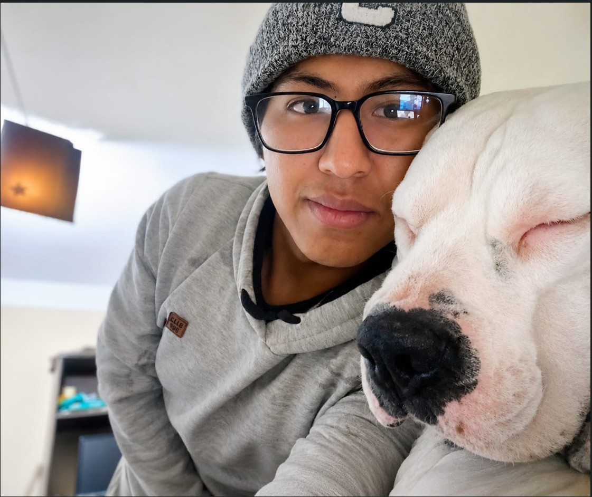
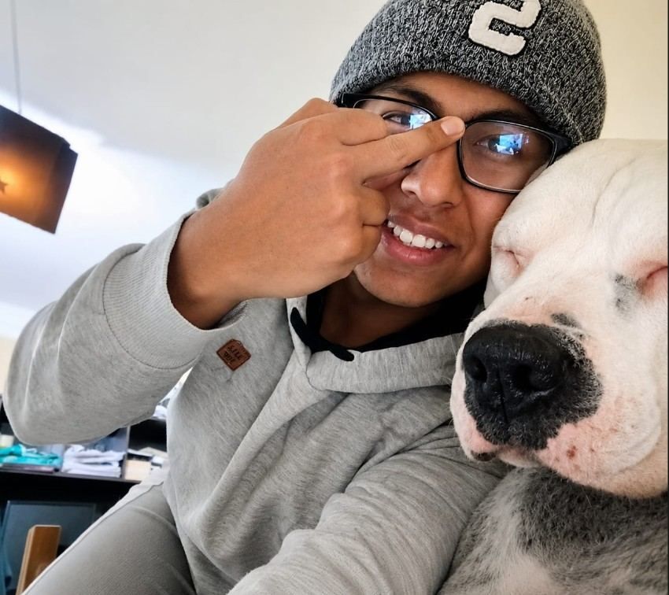

una historio que comenzo por Jose Madero(que grande como lo agradezco ajjaja)
❤️
Para el amor de mi vida.....(no pense estar tan camote de alguien odio esa debilidad porque ya sin ti no podre....)
💖💖💖💖💖
Para Wendy
Dia 0
Hola, Wendy.
Antes de que empieces a leer todo esto, quiero decirte algo.
Ya no quiero que esto se trate de una disculpa ni de intentar convencerte de algo. Tampoco quiero que pienses que hago todo esto para dar pena o para buscar que cambies de opinión.
La verdad es que estos detalles ya los tenía preparados desde hace varios días. De hecho, quería enviártelos el lunes y el martes, pero en mi estúpida cabecita primero quería sentir que estabas bien para recién empezar a mandártelos. Al final nunca encontré el momento.
Y viendo cómo están las cosas ahora... siento que probablemente ya perdí todo. Tal vez sí. Tal vez no. Ya no lo sé.
Pero aun así quiero que recibas esto.
No porque espere algo de vuelta.
No porque quiera presionarte.
Simplemente porque cada uno de estos detalles los hice con muchísimo cariño. Porque, aunque las cosas hayan cambiado, el cariño que te tengo sigue siendo real... y el amor que siento por ti también. Eso no desaparece de un día para otro.
Así que, si decides leer todo esto, solo quiero que sepas que cada palabra y cada detalle fueron hechos con mucho amor.

"quierenos no ves que Conor y Yo estamos sufriendo, él ya siente que se va a quedar sin mamá"

"Por si realmente estas abandonando a Conor y tambien a mi, jajaj bueno no mucho mi persona"
Hola Wendy, mi amor.
Si esto te llega es porque al fin reuní un poco de coraje para ser un poquito más egoísta con lo que quiero en mi vida... y yo quiero tenerte en mi vida.
Así que voy a empezar a ejecutar mi plan...
...para encadenarte a mí.
JAJAJAJAJA.
Con todo mi amor, Leonardo
DÍA 05 DE MAYO DE 2026
Pues ese día realmente no pasó nada.
Creo que te envié "Perfecta"... JAJAJAJA. Y sí, por error de dedo vi una de tus historias y terminé enviando eso. Fue completamente accidental.
Tampoco le di tanta importancia porque, siendo sincero, yo no buscaba absolutamente nada con nadie. Incluso pensé que si me respondías puteándome por baboso, simplemente lo iba a aceptar. JAJAJAJA.
Lo curioso es que la primera interacción que tuvimos contigo fue justamente por una canción de José Madero.
Ya antes me habías llamado un poco la atención, pero aun así no quería conocer a nadie. Estaba muy cómodo estando solo y prefería seguir así.
Después llegó el 12 de mayo.
Y ahí sí me asusté.
Nadie comentaba mis historias... y apareciste tú.
¿Y qué hice?
Pues ignorarte.
JAJAJAJA.
No porque me cayeras mal.
No porque no quisiera hablar contigo.
Sino porque me daba miedo.
Como ya te dije una vez, tenías una cara de emputada que imponía muchísimo. Tus ojos eran tan neutros que daban miedo. No transmitían si estabas feliz, seria o si estabas pensando cómo matar a alguien. JAJAJAJA.
...
💖 Cancion que sentia en esos dias 💖
para el amor de mi vida (porque wow no sabes que tan camote estoy de ti...)
🎵 Una melodía guardada para ti
Esta canción en particular me hace acordarme muchísimo de ti, porque me transporta directo a esos días cuando no sabía ni cómo responderte. Me daba un miedo tremendo escribirte y, aun así, por dentro se me morían las ganas de seguir conociéndote.
Lo increíble es que, mientras más te conocía, más ganas me daban de estar ahí para ti, de cuidarte y ayudarte en lo que pudiera. Jamás en mi vida pensé llegar a sentir algo tan profundo por alguien.
Hasta el día de hoy me cuesta creer lo increíblemente camote que estoy de ti, pero si de algo estoy completamente seguro, es de que todo lo que siento por ti siempre ha sido y será el amor más sincero de mi vida.